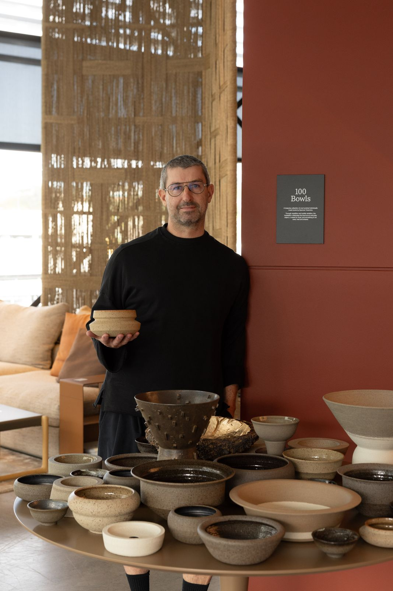

The studio · Auckland
A small studio.
One pair of hands.
One pair of hands.
Scroll

I throw stoneware in small batches, and sign each piece by hand. The work keeps a record of how it was made.
Small movement at the rim, depth in the glaze where the flame caught. The marks of the making, quietly left in.


Craig Spencer (b. 1976) moved from New Zealand to Australia in 1998 with a degree in Spatial Design, beginning his career in interior design. Working with prominent Sydney design studios, he contributed to a diverse range of commercial and residential projects before establishing his own interior design practice.
Craig's interior design experience spanned across highly considered private residences and hospitality interiors. A period spent in Singapore working in high-end furniture retail further deepened his appreciation for great design, materiality, craftsmanship and the finer details that distinguish leading design brands.
On returning to Australia, Craig was drawn towards a more personal creative journey, one rooted in making and craft. His ceramic practice began with a four-week wheel-throwing workshop on the Gold Coast, which, rather happily, turned into almost two years of learning and experimentation. During this time, he developed his skills in both hand-building and throwing through guided mentorship.
With more than 20 years of experience across design, interiors and furniture, Craig brings a distinct architectural sensibility to his ceramic work. His practice is characterised by strong lines, minimalist forms and tactile, often unglazed surfaces that reveal the presence of the hand.
Drawing inspiration from Japanese design, traditional tailoring and textiles, Craig's work combines restraint with a keen sensitivity to texture, proportion and form. Alongside his ceramic practice, he has a particular passion for interior lighting and creates bespoke lighting collections for private clients. He also produces architectural tablescapes and sculptural pieces designed to make a considered statement within contemporary interiors.
Craig's extensive experience in creating sophisticated residential and commercial spaces informs his understanding of how objects can shape the character, balance and atmosphere of a room. His handcrafted ceramic works are designed to complement and elevate their surroundings, bringing something distinctive, tactile and thoughtfully resolved to each space.
This approach has led to collaborations with distinctive brands, including Aesop, whose emphasis on considered design aligns closely with Craig's own philosophy.
At the heart of Craig's practice is the belief that the ceramic journey is never fixed. It is an ongoing process of curiosity, learning and discovery, with each new piece offering an opportunity to explore clay in a different way. His approach is intentionally adaptable, a kind of creative chameleon, responding to the material, the environment and the moment.
Today Craig works from his studio in Auckland, moving between New Zealand and Australia.
